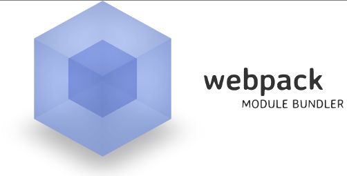

Web Hackthon Seminar
6
css/webpack
css
CSS 的多種 import 方式
直接給 html 標籤 style
(inline-style)
<div style="color: red; background-color: #D8756E; font-size: 80px;">
yo</div>
如果沒有特別的手段千萬別這樣做...
以後會完全亂成一團
嵌入 style 區塊 (style block)
<style>
h1 {
color: red;
}
</style>只有首頁比較常見：樣式比較快呈現
寫在另一個 CSS 檔案再匯入
<link rel="stylesheet" href="style.css">
這才是主流作法
CSS reset
學了一些 CSS 入門後千萬不要直接衝動就開始寫下去
不然你就會像我三年前一樣
怎麼到最後每個瀏覽器都長得不一樣...
例如 chrome 的 default margin...
normalize.css
https://necolas.github.io/normalize.css/
css 世界最偉大的發明之一
被許多 css framework 內建進去
從 cdn import
<link rel="stylesheet" href="https://cdnjs.cloudflare.com/ajax/libs/normalize/4.0.0/normalize.min.css">
剛剛的 css...
h1 {
color: red;
}把 h1 tag 改成紅色
這就是 CSS 定位目標的方式
稱為選擇器 (selector)
剛剛看到的是 tag selector
用法：
標籤名稱 {
樣式屬性: 樣式值;
}千萬別亂用 tag selector
一改很可能就改到網站上其他東西
還有幾個比 tag selector 重要一百倍的
class selector
<h1 class="article-heading">標題</h1>
搭配
.article-heading {
color: red;
}
.名稱 {
樣式屬性: 樣式值;
}id selector
<h1 id="first-heading">標題</h1>
搭配
#first-heading {
color: red;
}
#名稱 {
樣式屬性: 樣式值;
}可以一路使用好幾個選擇器
.article .title {
color: red;
}
會應用到
<div class="article">
<h2 class="title">文章標題</h2>
<p>....</p>
</div>
的文章標題
還有好多好多選擇器
Selector Priority
style > id > class > tag

CSS 基本屬性
css 的屬性好多，多到有一些我也不會，不過那些大多不重要..
長寬
- width
- height
- min-width
- min-height
- max-width
- max-height
字型
- color
- font-size
- line-height
背景
- background-color
- background-image
display
需要先知道
行內元素與區塊元素的差別
一般元素都是 inline 或 block
區塊元素 (block)
代表結構的東西都是區塊元素
h1 ~ h6, p, br, div, ul, ol, form...
行內元素 (inline)
其他不是結構的通常都是行內元素
a, img, span
inline
- 無法調整 width, height
- 無法調整 top, bottom 的 padding, margin
block
- 要置中必須設定長度並 margin: 0 auto;
- 使用 max-width 取代 width 避免小螢幕出現滾動軸
inline-block
- 在 inline 擁有 block 特性
- 排多個元素時比 float 簡單許多
- 可能需要 vertical-align: top 來對齊最上面
可以參考 egghead 的教學影片
display: none v.s. visibility: hidden
- display: none 看不見且不佔空間
- visibility: hidden 看不見但佔空間

border
- border: 3px solid #fff;
margin
- margin: 20px 15px 10px 5px;
padding
- padding: 5px 10px 15px 20px;
margin, padding 口訣：上右下左
強烈建議使用 box-sizing: border-box
一般人習慣認知
width = content width + padding + border
那 #ff0101 是怎麼回事？
16 進位 RGB
R:255, G: 1, B: 1
2 進位...
R:11111111 G:00000001 B:00000001
瀏覽器會依照 normal flow
來顯示 HTML 元素，
也就是上到下、左到右
position
- 一般 normal flow，所有元素都是 position: static，上到下、左到右
- position: fixed，會固定在視窗的絕對定位
- position: relative，會依照 normal flow 位子相對調整
- position: absolute，會從 normal flow 移除，改為相對於上一層為非 static 的元素，如果都沒有則相對於 body
overflow
overflow 有幾種屬性：
| visible | 預設的，長度超過會超出框框 |
| hidden | 長度超過會隱藏 |
| scroll | 不管怎樣都出現滾動軸 |
| auto | 長度超過會有滾動軸，反之沒有 |
overflow: visible
overflow: hidden
overflow: scroll
overflow: auto
RWD (Responsive Web Design)
- 用 % 取代 px
- 用 em, rem 來表示字體大小
- 用 % 數在很小的時候會很難看，media query 可針對不同大小制定不同 layout
rem
/* 預設 font-size 16px * 62.5% = 10px，方便計算 */
html { font-size: 62.5%; }
body { font-size: 1.4rem; } /* =14px */
h1 { font-size: 2.4rem; } /* =24px */media query
@media (min-width: 600px) {
// width 大於 600px 的 css
}
@media (min-width: 300px) and (max-width: 600px) {
// width 介於 300px-600px 的 css
}
@media (max-width: 300px) {
// width 小於 300px 的 css
}
來不及提到的：
- flexbox 是未來性做法
- z-index 是來處理誰要疊上面的屬性
webpack
為什麼需要 webpack？
前端不能直接使用 CommonJS module
需要編譯過
安裝
npm install -g webpack簡單的使用狀況
<html>
<head>
<meta charset="utf-8">
</head>
<body>
<script src="bundle.js"></script>
</body>
</html>
// entry.js
var add = require('./add');
console.log('9876 + 1546 = ', add(9876, 1546));
// add.js
module.exports = function(a, b) { return a + b; }
// terminal
webpack ./entry bundle.js
// terminal
webpack ./entry bundle.js
// webpack [entry-path] [output-path]
// ./entry 是模組的進入點，編譯會從這裡開始
// bundle.js 是常用的輸出檔案名稱
練習
Watch Mode
// terminal
webpack --watch ./entry bundle.js
// --watch 會監控檔案改變進行編譯
Loaders
Webpack 可以透過 loader 來讓檔案經過某種處理
Babel Loader
// 先安裝 babel-loader
npm install --save-dev babel-loader上學期使用 babel v5，這學期則是 v6
// v6 建議安裝以下 babel presets 語法擴充
npm install --save-dev babel-preset-es2015 babel-preset-stage-0
babel-preset-react寫 .babelrc 設定檔，使用這些語法擴充
{
"presets": ["react", "es2015", "stage-0"]
}
// 因為稍微複雜了最好寫個設定檔 webpack.config.js
module.exports = {
devtool: 'cheap-module-eval-source-map',
entry: './entry', // 進入點
output: {
filename: 'bundle.js', // 輸出的檔案名稱
},
module: {
loaders: [{
test: /\.js$/, // 針對 js 檔
loaders: ['babel'],
exclude: /node_modules/ // 不要處理 3rd party 的 code
}]
}
};
// 設定檔寫好了所以直接 call 就好了
webpack// 如果設定檔不想叫 webpack.config.js 的話，可以設定設定檔
webpack --config webpack.config.dev.jsStyle & CSS Loader
// 先安裝 style-loader css-loader
npm install --save-dev style-loader css-loader// webpack.config.js
module.exports = {
devtool: 'cheap-module-eval-source-map',
entry: './entry', // 進入點
output: {
filename: 'bundle.js', // 輸出的檔案名稱
},
module: {
loaders: [{
test: /\.js$/, // 針對 js 檔
loaders: ['babel'],
exclude: /node_modules/ // 不要處理 3rd party 的 code
}, {
test: /\.css$/, // 針對 css 檔
loaders: ['style', 'css'],
exclude: /node_modules/ // 不要處理 3rd party 的 code
}]
}
};
// 就可以這樣 import css
import './myCss.css';
require('./myCss2.css');練習：用 webpack 改寫 Todo List
THE END
Thanks for listening